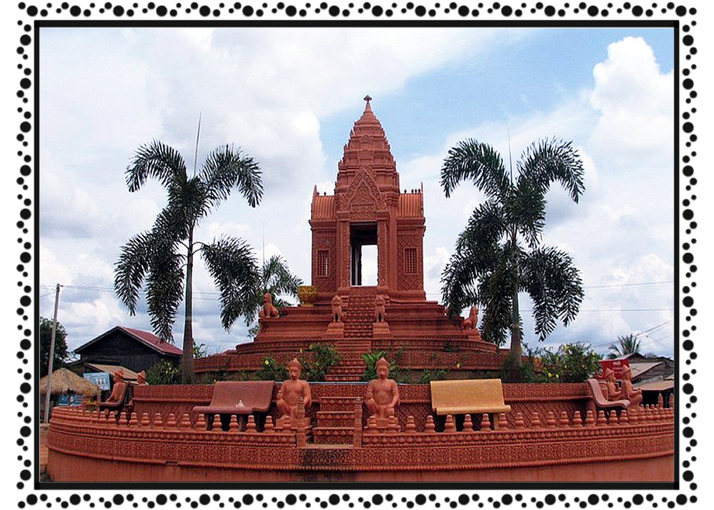

ខេត្ត និងក្រុងនៃព្រះរាជាណាចក្រកម្ពុជា
អូរដរមានជ័យ
 ខេត្តឧត្ដរមានជ័យ គឺជាខេត្តមួយស្ថិតនៅភាគពាយ័ព្យក្នុងប្រទេសកម្ពុជា ដែលមានព្រំប្រទល់ជាប់នឹងខេត្តបន្ទាយមានជ័យនៅខាងលិច ខេត្តសៀមរាបនៅខាងត្បូង និងខេត្តព្រះវិហារនៅខាងកើត ហើយមានព្រំដែននៅខាងជើងជាប់នឹងព្រំដែននឹងប្រទេសថៃ។ ទីរួមខេត្តគឺសំរោង។ ខេត្តនេះមានចម្ងាយប្រហែលជាង ៤៦២ គីឡូម៉ែត្រពីរាជធានីភ្នំពេញបើចេញដំណើរពីខេត្តឧត្តរមានជ័យមកតាមបណ្តោយផ្លូវជាតិលេខ៦៨ និងភ្ជាប់មកផ្លូវជាតិលេខ៦។ ខេត្តនេះមានទេសចរណ៏ធម្មជាតិ និងទេសចរណ៏វប្បធម៌។ ខេត្តនេះជាតំបន់ដែល មានប្រាសាទបុរាណជាច្រើនផងដែរ។ រីឯតំបន់ទេសចរណ៏ធម្មជាតិវិញ ទីនោះមានតំបន់អច្ឆរិយមួយគឺតំបន់រមណីយដ្ឋានដីដុះ ឬ រលួសធំដីដុះ ដែលមានទីតាំងនៅជាប់ជើងភ្នំដងរែក និងជាប់ផ្លូវក្រវ៉ាត់ព្រំដែន។ឈ្មោះខេត្តមួយនៃកម្ពុជរដ្ឋ ខេត្តឧត្តរមានជ័យ គឺមានពាក្យ ឧត្តរ ប្រែថា ភាគខាងជើង និងពាក្យ មានជ័យ ប្រែថា ជ័យជំនះ ហើយក៏ជាខេត្តចុងក្រោយគេបង្អស់ក្នុងទូទាំងប្រទេសដែលបានសម្រេចធ្វើសមាហរណកម្មបញ្ចប់សង្គ្រាមស៊ីវិលរ៉ាំរ៉ៃ នាថ្ងៃទី២៣ ខែមេសា ឆ្នាំ១៩៩៨ ។ ខេត្តឧត្តរមានជ័យបានបង្កើតនៅឆ្នាំ១៩៦៤ តាមព្រះរាជក្រមលេខ ១៩៤ ប.ក ចុះថ្ងៃទី១២ ខែកក្កដា ឆ្នាំ១៩៦៤ នៅសម័យសង្គមរាស្ត្រនិយម (១៩៥៣-១៩៧០) ក្រោមព្រះរាជកិច្ចដឹកនាំដោយសម្ដេចព្រះបាទនរោត្តមសីហនុ ប៉ុន្តែក្រោយឆ្នាំ១៩៧០ សង្គ្រាមបានឆាបឆេះឡើង រាល់រចនាសម្ព័ន្ធរដ្ឋបាលត្រូវបានលើកទីតាំងដាក់នៅខេត្តសៀមរាប។ខេត្តឧត្តរមានជ័យត្រូវជាមួយខេត្តសៀមរាបនៅសម័យកម្ពុជាប្រជាធិបតេយ្យឬ សម័យខ្មែរក្រហមជាតំបន់ស្វយ័តដាច់ដោយឡែក(ភូមិភាគពិសេស)។ នៅទសវត្សរ៍ឆ្នាំ៨០-៩០ ខេត្តនេះក៏ជាទីតាំងភូមិសាស្ត្ររបស់ពួកខ្មែរក្រហម ជាពិសេសគឺស្រុកអន្លង់វែង ។ នៅខេត្តឧត្តរមានជ័យនេះជាទីតាំងដែរប៉ុលពតទទួលមរណៈភាពនៅទីនោះផងដែររហូតដល់ពួកខ្មែរក្រហមចុះចូលជាមួយនឹងរាជរដ្ឋាភិបាលនៅឆ្នាំ១៩៩៩។ យោងព្រះរាជក្រឹត្យលេខ/រកត/០១៩៥/០៧ ចុះថ្ងៃទី២៨ ខែមករា ឆ្នាំ១៩៩៥ ខេត្តនេះត្រូវបានបង្កើតឡើងសារជាថ្មីផ្ដាច់ចេញពីខេត្តសៀមរាប នៅពេលនោះ រាល់រចនាសម្ព័ន្ធពុំទាន់ដំណើរការនៅឡើយ លុះដល់ថ្ងៃទី២៧ ខែមេសា ឆ្នាំ១៩៩៩ ស្ថិតក្រោមអធិបតីភាព ឯកឧត្ដម ស ខេង ឧបនាយករដ្ឋមន្ត្រី និងជារដ្ឋមន្ត្រីក្រសួងមហាផ្ទៃ ក៏បានប្រកាសដាក់ឲ្យដំណើរការ ការងាររដ្ឋបាលជាផ្លូវការ។